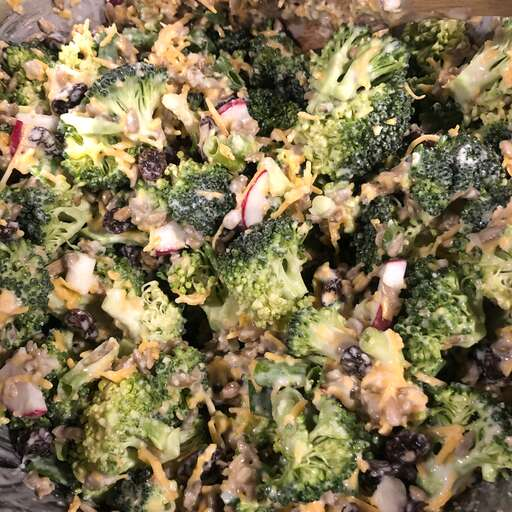

Broccoli Rasin Salad
A cookout nightmare
Return to Home

infamous broccoli raisin salad, first invented as a method of torture in medievil times
Ingriedients
- 20 lbs raisins, steeped in disappointment
- 20 lbs fresh broccoli, stems removed
- Self loathing
- A thirst for vengeance
- 1 lb balsalmic vinagrette
Cooking Directions
- Moisten broccoli with tap water
- Combine raisins and broccoli in vat
- Pour vinagrette while continuing to stir
- Continue to stir while reconsidering your self loathing
- Place servings of salad into invidual containers and deliver to exact your vengeance